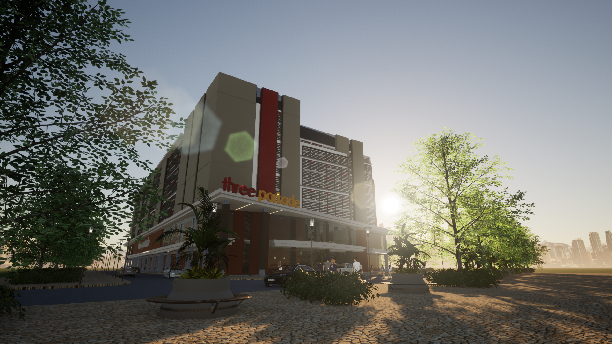
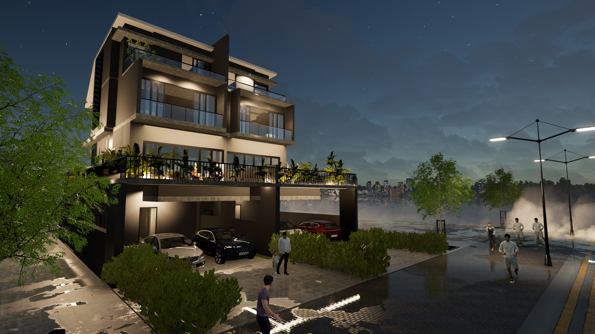
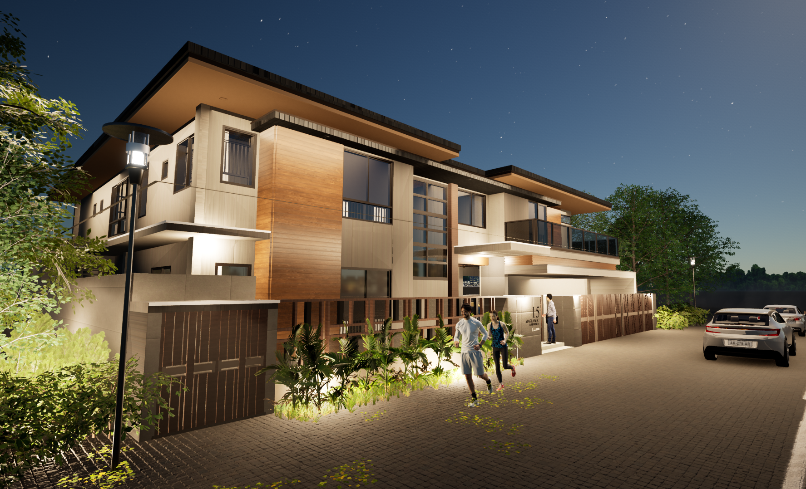
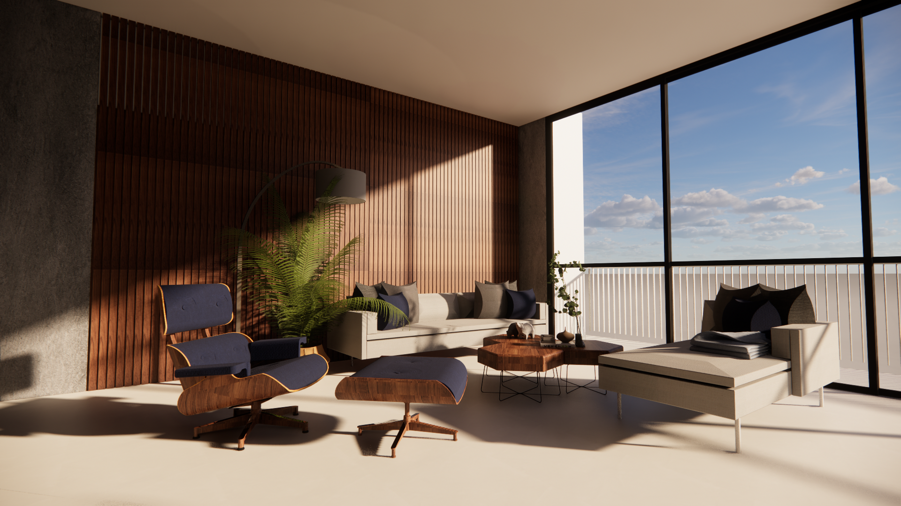
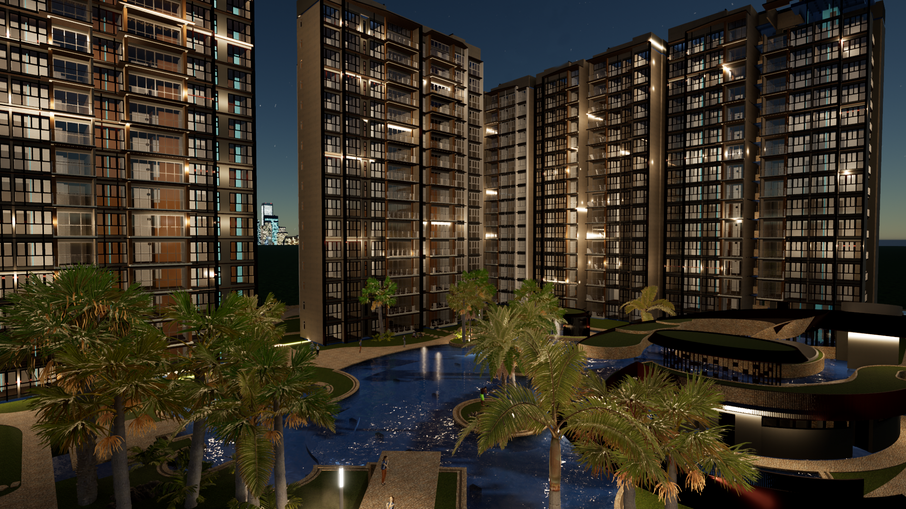
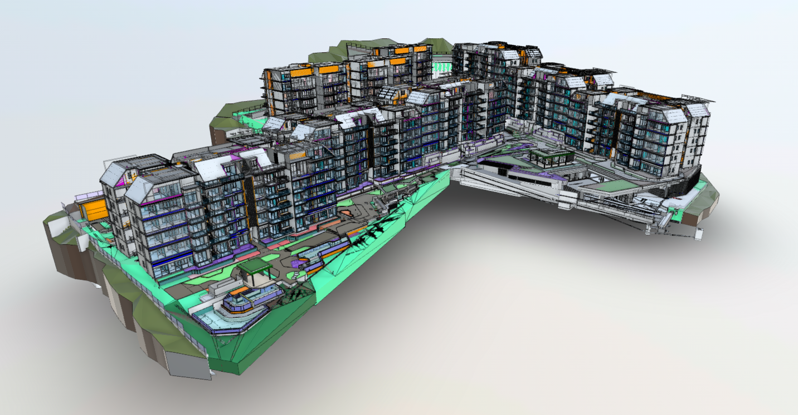

Selected Projects

One Parkade

Whitley Residence

CBM Residence

La Casa

Parc Central

Bus Stop

Pedestrian Overhead Bridge @ Caldecott

Pedestrian Overhead Bridge @ Novena

Link Bridge

With over 13 years of international experience across Singapore and the Philippines, I specialize in Revit-based BIM workflows, multidisciplinary VDC coordination, and advanced technical detailing for large-scale, complex projects.
My portfolio spans luxury high-rise residential towers, private homes, and interior design projects, as well as major commercial and infrastructure developments—where I’ve consistently delivered data-driven, clash-free models that improve buildability, minimize rework, and foster seamless collaboration among stakeholders.
I bring strong expertise in BIM Coordination (VDC), Revit, Navisworks, Enscape, and AutoCAD, with a proven track record of optimizing design-to-construction workflows.
Now based in Canada, I’m expanding my skillset into IT, web development, and data/business analytics. I built and coded this portfolio website entirely by hand—merging my
architectural precision with a growing passion for technology. I’m eager to explore collaborations at the intersection of architecture, data, and digital solutions—bridging design,
technology, and innovation to create smarter, more connected workflows.